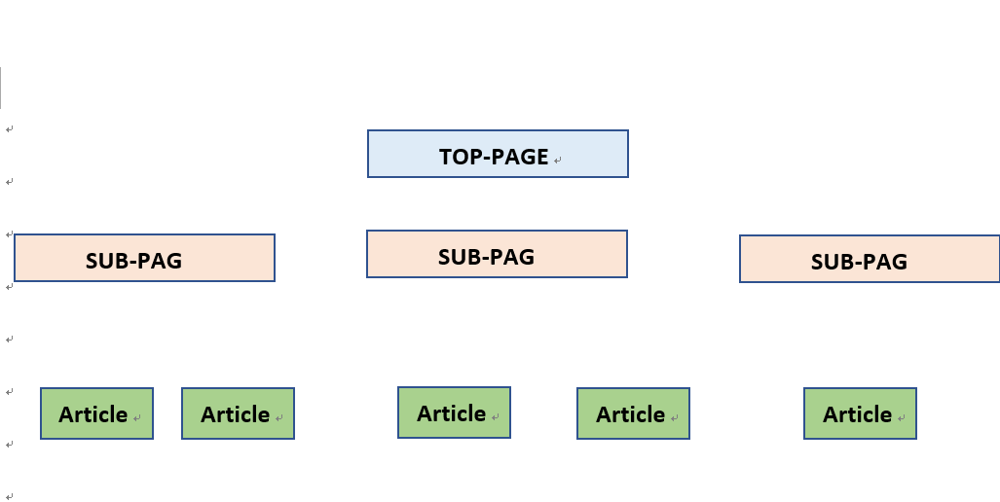

1.制作の流れを決める
ホームページを作るにあたって、大切なことはしっかり目的を明確化し、制作の流れを決めることです。
我々もまずは プロジェクトマネジメントで記載している通り、目的を明確化することから始めました。
誰に見てほしいのか・何を解決したいのか皆さんも考えてみてください。
2. ターゲットを決める
ターゲットとはつまり、サイトを見てほしい人です。
例えば、痩せたい20代の若者、雰囲気が良い居酒屋を探している20代などといった具合です。
ここでポイントはただ単に「20代で東京でお腹すいてる人」といった抽象的・範囲が広い
表現は避けるべきです。
何故なら何億というサイトの中から、見てくれる可能性が低くなるからです。
具体的・ユーザが限られるターゲット層を狙いましょう。
このサイトでは
”10代・20代・学校の後輩/HTML・CSSの学習でつまずいている人・体系的に学びたい人”
をターゲットにしました。
ユーザはGoogleによると5秒で1/4のユーザが離脱すると言われています。
つまり、如何に第一印象を良くするかユーザの離脱率を下げる工夫が必要です。
3.コンテンツを決める
当然、ホームページを作りたいということは何か書きたい内容だったりサービスは決まっているでしょう。
ただここで言うコンテンツとは、 ターゲット層に何を伝えるのかを指します。
大きく伝えたいコンテンツが一つあったとしても、細かく定義することが大切です。
例えば、英語の学習サイトがあったとしましょう。大半がリーディング・ライティング・
リスニングの様にカテゴリ-毎に分けていますよね。
大半のユーザは、自分の知りたい情報・知識を手にいれる為にサイトを訪問します。
詳細にコンテンツが分かれているほうが、ユーザは見やすいのです。
4.サイトの構造を決める
コンテンツのカテゴライズも終了したら実際にサイトの構造を決めます。
今回はTopページを基準とした、階層的志向で制作を行ったので参考に図を貼り付けます。

我々の場合SUBPAGEは、制作準備・HTML・CSSの三種類Articleは今見ているページ
つまり記事のことです。
構造を決めることにより、top-pageに必要な情報だったり、どのページにも表示される
ヘッダーやフッターのボタン要素を決定することができる。
5.ページレイアウトを決める。
どのページに何の情報を載せるか決定したら、ページのレイアウトを決める。
ここで必要なのは 統一感を大切に・見やすいデザインにすることです。
統一感が大切なので、ページで使うテーマ色やボタン配置は統一したほうが良いです。
不要な情報は見難さにつながるので、配色は5色以内に押さえ、配置などの工夫によって画面上の
情報量を押さえましょう。
また、SUB-PAGE同士、記事同士といった 同じ階層のページはデザインを統一しよう。
デザインレイアウトを転用することで、ユーザも見やすいし作業が効率化ができます。
レイアウトデザインは、必ず制作前にイラストレーターなどで理想の状態を可視化することをお勧めします。
手書きでも良いです。本ホームページは手書きでレイアウトを決定しました。
トップへ